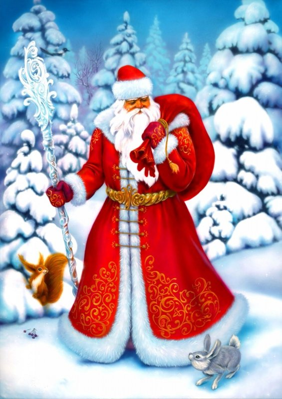
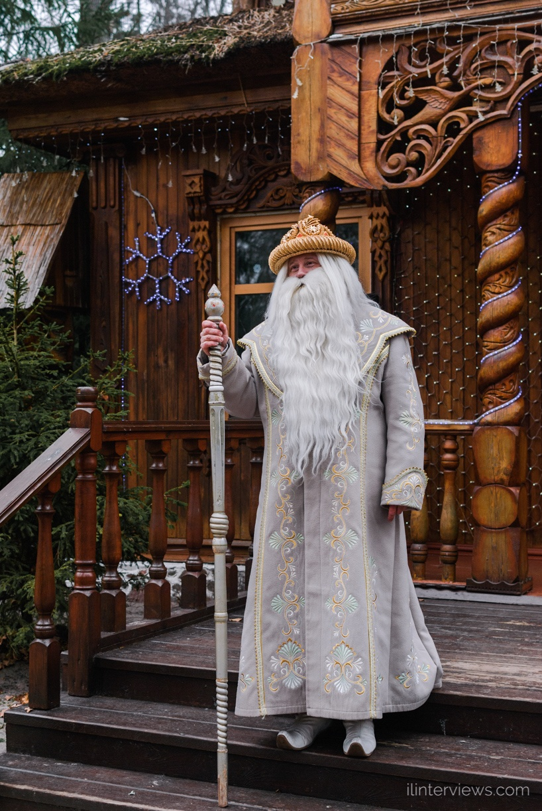

Дед Моро́з — главный сказочный персонаж на русском празднике Нового года, русский вариант рождественского дарителя.
Прообразами являются Мороз — персонаж славянского сказочного фольклора и календарных обрядов, и западноевропейские рождественские персонажи (Санта-Клаус и др.), основанные на образе святого Николая Чудотворца.
Известен (как Мороз Иванович) с 1840 года, но создание канонического образа Деда Мороза как обязательного персонажа новогоднего, а не рождественского праздника произошло в советский период и относится к концу 1930-х годов, когда после нескольких лет запрета вновь была разрешена праздничная ёлка.
Дед Мороз изображается как старик в цветной (голубой, синей, красной или белой) шубе, с длинной белой бородой и посохом в руке, обутый в валенки. Ездит на тройке лошадей. Часто приходит в сопровождении внучки Снегурочки, а в советский период и Мальчика Нового Года, персонификации наступающего или наступившего года. Также Деда Мороза иногда сопровождают различные лесные звери.

В Белaруси Дед Мороз (белор. Дзед Мароз) также имеет свою официальную резиденцию. 25 декабря 2003 года на территории национального парка «Беловежская пуща» приветствовал в своей усадьбе первых гостей белорусский Дед Мороз
со Снегурочкой. С тех пор Дед Мороз круглый год, а не только под Новый год, встречает гостей. За первые пять лет работы Поместья здесь побывало более 340 тысяч туристов из 70 стран мира.
Белорусский Дед Мороз одет в длинную шубу до пят, опирается на волшебный посох, не носит очки, не курит трубку, ведёт здоровый образ жизни и не страдает заметной полнотой. Самым первым официальным Дедом Морозом в Беловежской пуще был Вячеслав Семаков, заместитель директора белорусского Национального парка «Беловежская пуща» по научно-исследовательской работе. О своей двухлетней карьере Деда Мороза он написал книги «Как я был Дедом Морозом» и «Дед Мороз и его родня» (совместно с генеральным директором национального парка Николаем Бамбизой).
Общая площадь поместья составляет 15 гектаров. Кроме собственно Дома Деда Мороза, в поместье также имеется отдельный домик для Снегурочки, Сокровищница (белор. Скарбніца), где хранятся подарки и письма, присланные детьми, и Музей Деда Мороза. На территории резиденции произрастает, как ошибочно заявляют в национальном парке, «самая высокая в Европе» сорокаметровая натуральная ель, которой 120 лет.
Территория усадьбы украшена многочисленными деревянными статуями различных сказочных персонажей, макетом мельницы и «волшебным» колодцем. Филиал почтового ящика Деда Мороза находится в минском парке им. Горького.
С 2011 года Белорусская железная дорога организовала праздничный вагон в поместье Деда Мороза в Беловежскую пущу, который будет курсировать с 23 декабря. Также имеется «неофициальный» аналог Деда Мороза из белорусских сказок — Зюзя Поозёрский, который проживает в деревне Озерки, расположенной рядом с городом Поставы.
